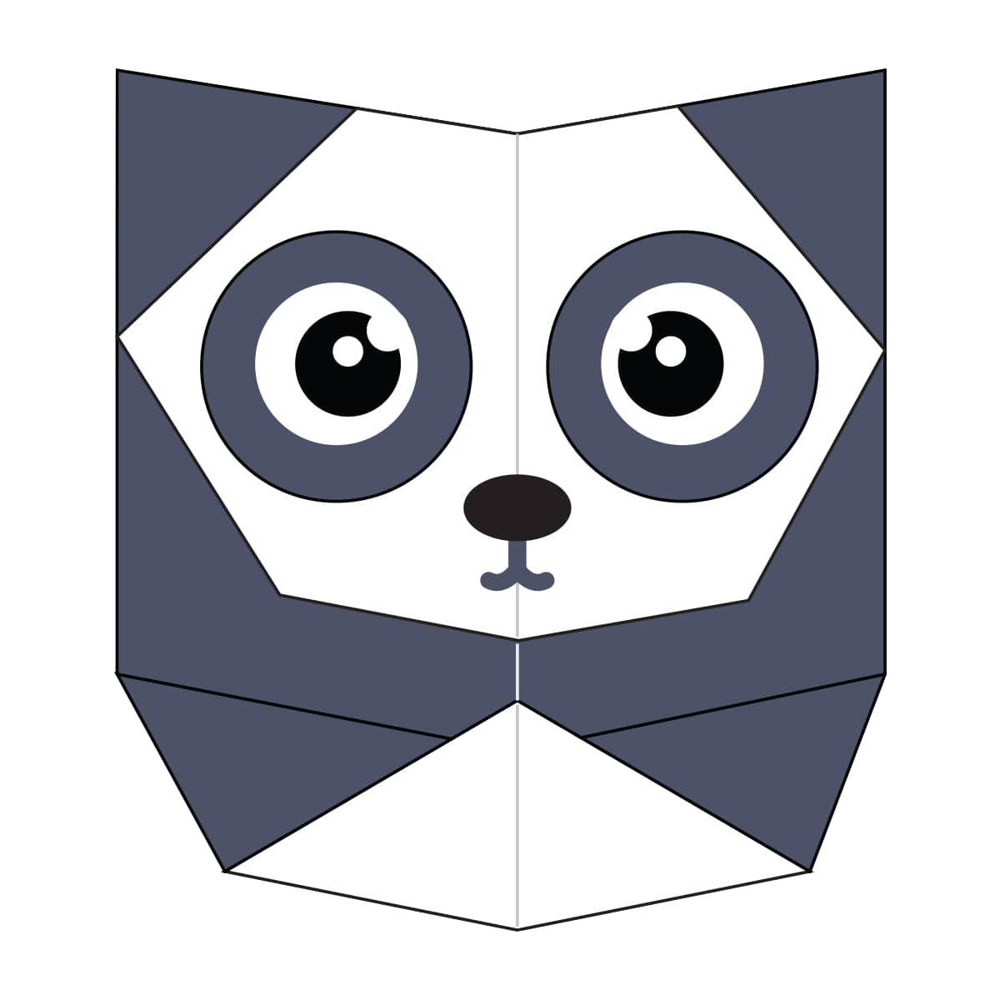
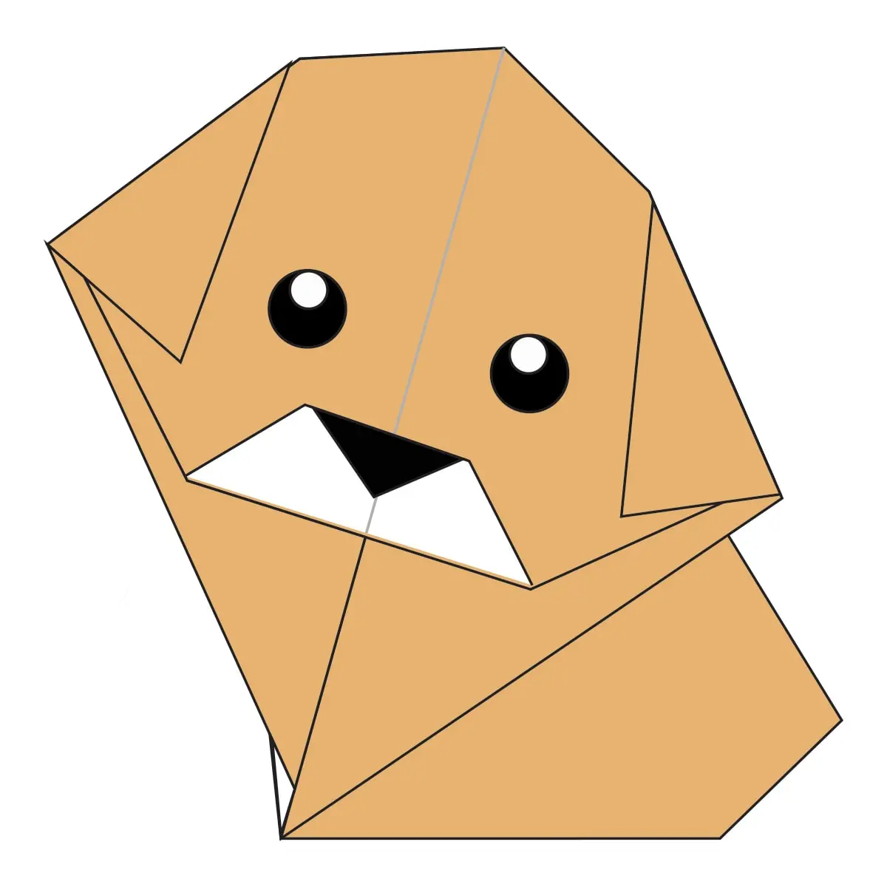
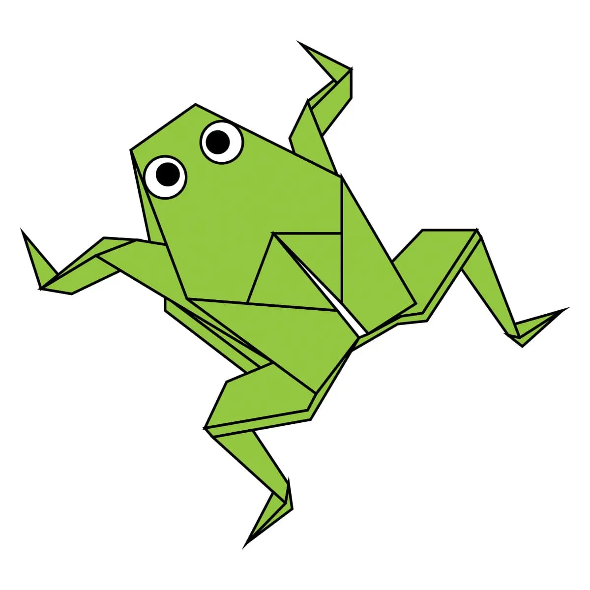
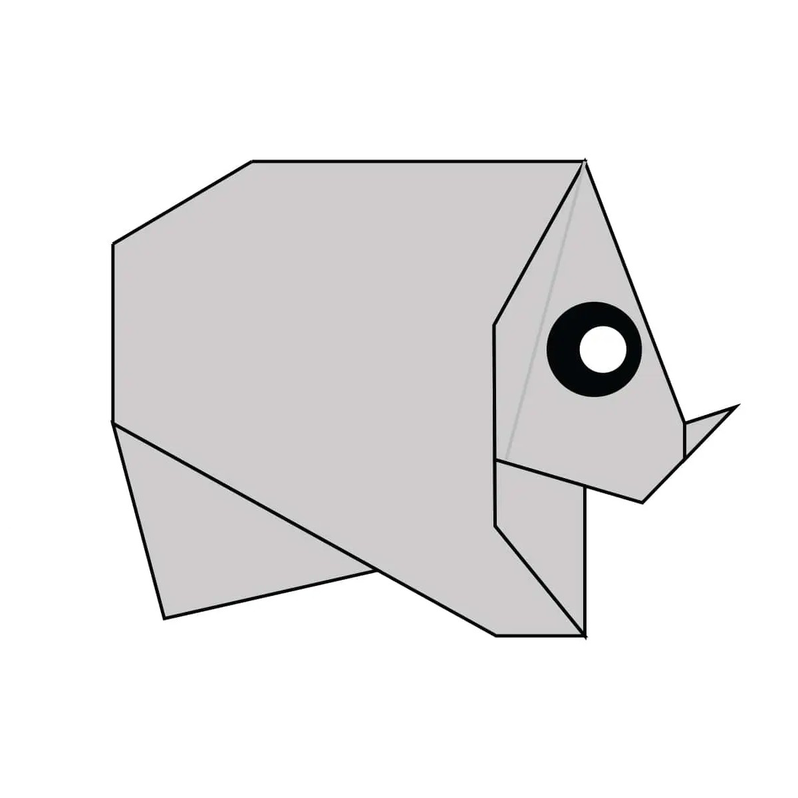

Origami Instructions and Diagrams
Step by Step diagrams are probably the most popular and easiest to follow way to show how to fold things out of paper.
Trying to find good origami instructions on the internet can be a lot of work though. To help your search we’ve put
together the largest database of free origami diagrams anywhere on the Internet. Click on the image of the animal you
want to build, and you find the steps to bulid it.

Camel
- Camels have three sets of eyelids and two rows of eyelashes to keep sand out of their eyes.
- Camels can reach 7 feet in height and weigh up to 1500 pounds.
- Camels are very strong and can carry up to 900 pounds for 25 miles a day.

Chameleon
- Chameleons have extremely powerful tongues.
- The tongues of chameleons are two to three times longer than their bodies.
- Chameleons have good eyesight

Pigeon
- They can find their way back to the nest from 1,300 miles away.
- Pigeons can move their wings ten times per second.
- Pigeons are herbivores.

Teddy bear
- The first toy stuffed bear was created by German toymaker Margarete Steiff.
- The largest teddy bear measures 19.41 m in length.
- Bears are extraordinarily intelligent animals.

Panda
- A panda's eyes are different to normal bears.
- Giant pandas spend 10-16 hours a day feeding, mainly on bamboo.
- In the wild, a panda can live up to 20 years.

Cicada
- Cicadas one of the loudest insects.
- There are more the 3000 species.
- Some cicadas live undeground for a long time.

Puppy
- Puppies are born without teeth.
- Their sense of smell is at least 40x better than ours.
- Puppies are blind and deaf at birth.

Frog
- Frogs absorb water through their skin.
- Some frogs can jump over 20 times their own body length.
- A group of frogs is called an army.

Rhino
- Rhinos have poor vision.
- A rhino horn is made up mainly of keratin.
- Rhinos love rolling around in mud.